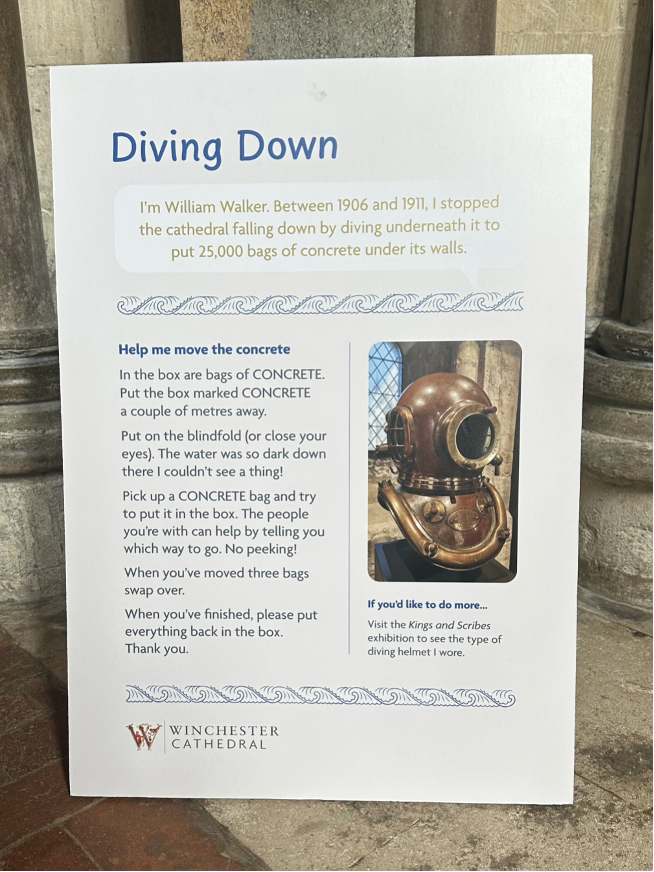
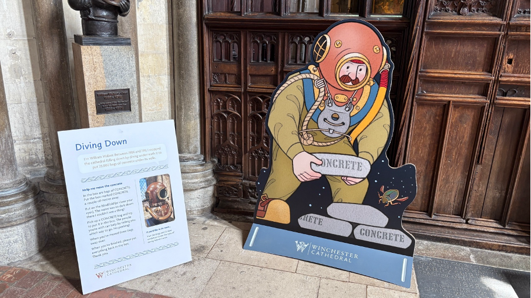
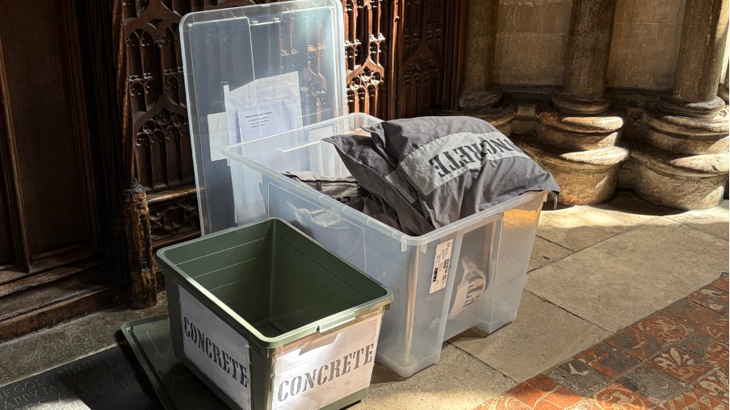

During my visit to Winchester Cathedral, I tried an interactive game designed for children and families, which tells the true story of William Walker. He was a diver who, between 1906 and 1911, submerged beneath the cathedral’s foundations and used 25,000 bags of concrete to stabilize its structure, preventing collapse. The installation uses incredibly simple yet vivid ways to let visitors understand history through physical interaction.
A signboard in the first person of “William Walker” reads:
“I am William Walker. Between 1906 and 1911, I saved the cathedral by diving beneath it and placing 25,000 bags of concrete under its walls. Come help me carry the concrete!”

The game rules are straightforward:
- Place boxes labeled “CONCRETE” a few meters away.
- Wear a blindfold (or close your eyes to simulate Walker’s vision in dark waters).
- Try to lift a “concrete” bag and, guided by others’ voices, toss it into the box.
- Rotate roles after moving three bags.

This game, though relying on no screens or high-tech, transforms a historical labor experience into a tangible physical one through sensory restrictions and role-playing. It’s not only fun but also fosters historical empathy, letting people connect with the past through embodied action.

Reflection
This installation made me realize that low-tech yet highly immersive interactive approaches are actually ideal for narrating history. Without complex systems, simple objects, spatial arrangements, and narrative frameworks can trigger users’ associations and emotions.
Especially the act of wearing a eyemask seems simple, but it completely transformed my perception of what Walker experienced. Instead of just knowing his deeds, I briefly experienced the difficulty of completing a task without sight.
Moreover, this design fosters collaborative communication: I had to rely on my friend’s guidance to act, making the experience more social and engaging much like how Walker must have depended on others’ help back then.
Idea for my project
This experience has made me realize that not all effective interactions need to be visual or digital. Touch, spatial awareness, and role-playing can also build a strong sense of immersion. Therefore, in my ongoing Winchester Cathedral AR project, I have started to consider:
- Whether to incorporate narrative segments from the perspective of historical figures (such as guidance in Walker’s tone);
- Combining digital visuals with physical action triggers, such as operations like users walking or touching;
- Designing an interactive experience with the nature of role-playing, allowing audiences to activate history through both body and imagination.